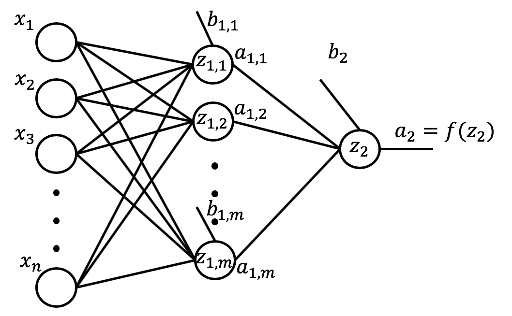
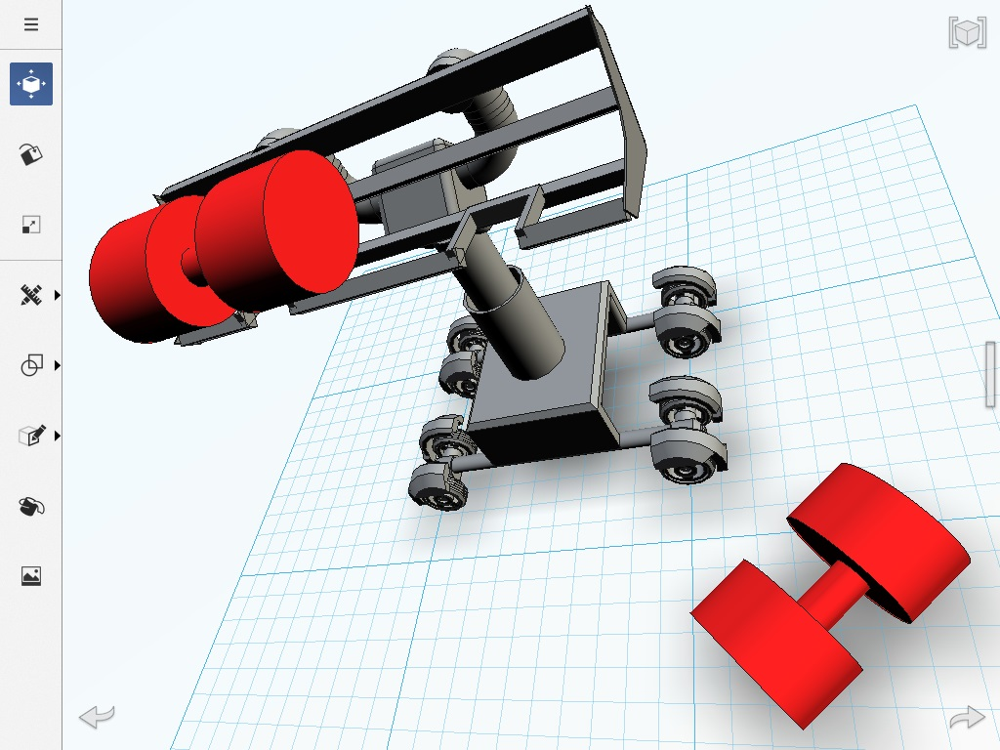

Physics 2.1(Hons) Bsc - The Open University
Quantum Computing/Particle Physics Researcher
Machine Learning IBM Certification
Deep Learning IBM Certification
Computer Vision IBM Certification
Python, C++, HTML, Java, CSS
Visual Studio, Anaconda-Navigator
AI Prompt Engineering & UI/UX
Physics Tutoring
LinkedIn
Hi, Ask me a question about Xavier's CV using the keywords below.
Scientific Writing - Extracts

Machine Learning - Case Study
Deep Learning - Case Study
Data Visualisation - Examples
Examples of Team Achievements
-->

CAD: Computer Aided Design